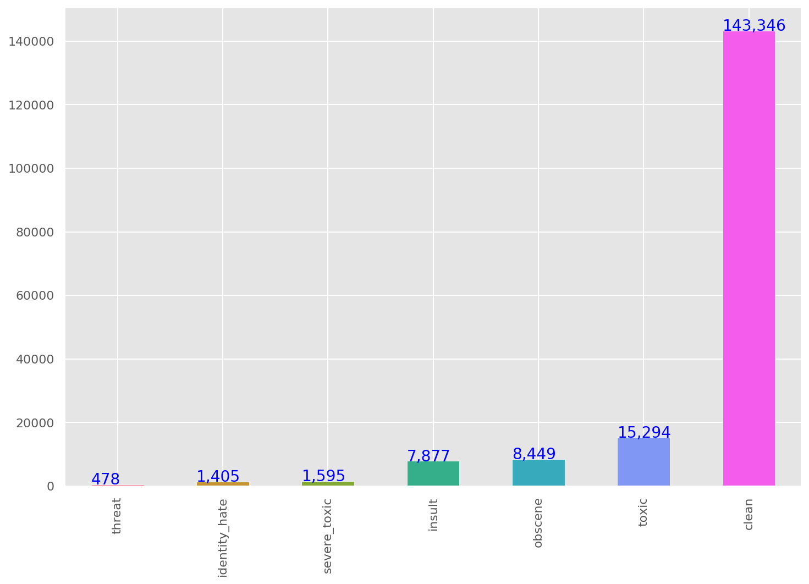
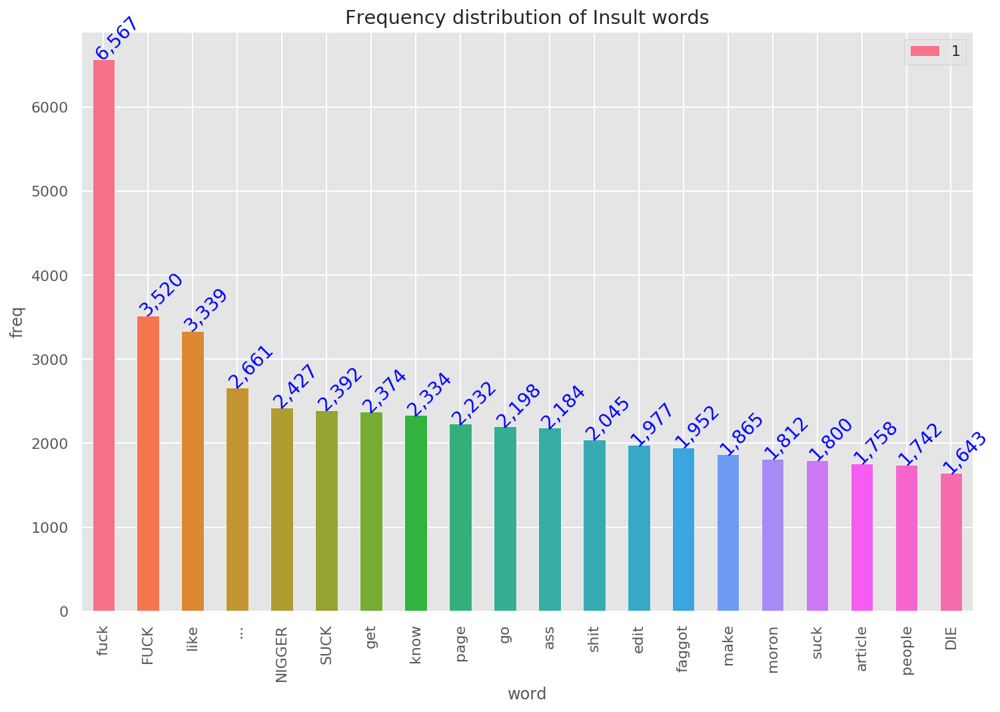
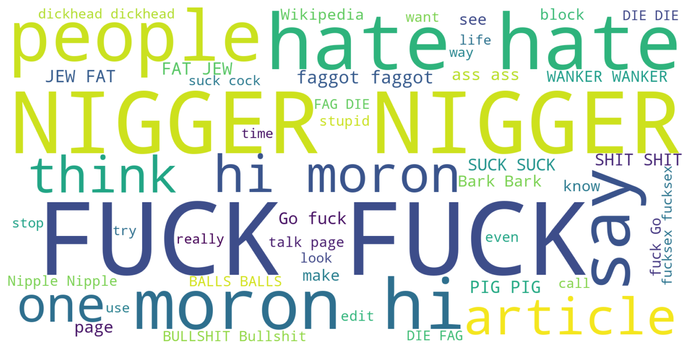
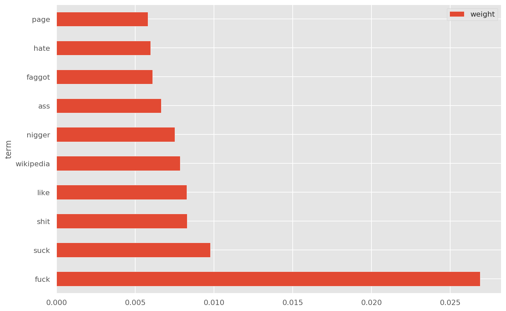
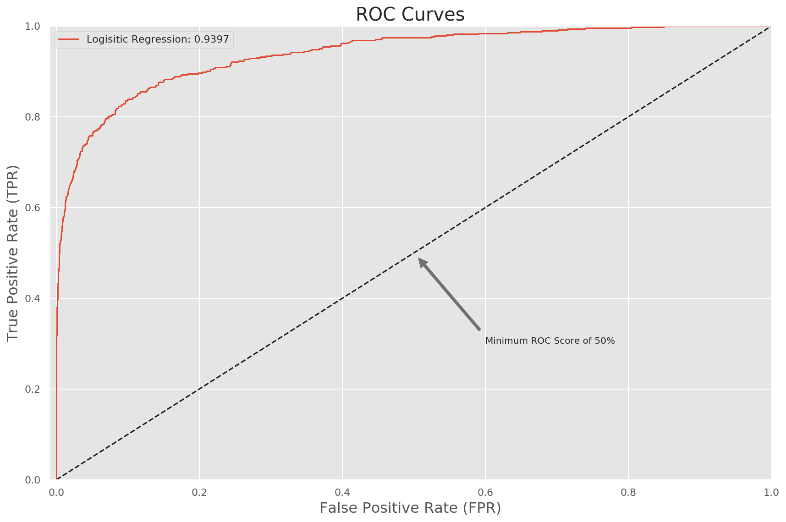
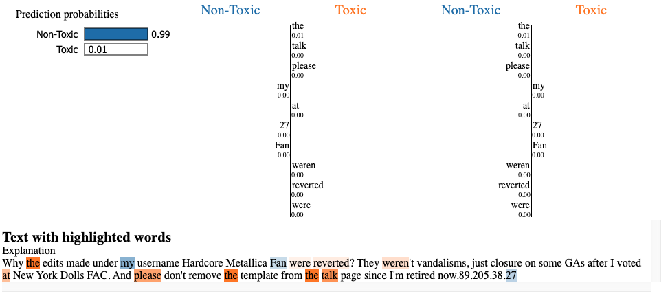
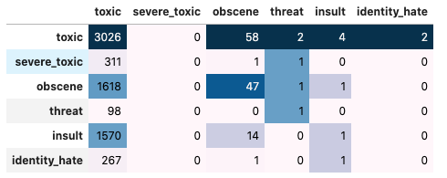
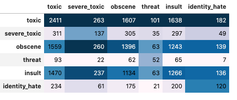
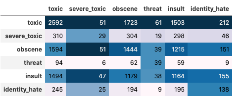

We are given large number of Wikipedia comments which have been labeled by human raters for toxic behavior.
The types of toxicity are: toxic, severe_toxic, obscene, threat, insult, identity_hate.
We should create a model which predicts a probability of each type of toxicity for each comment.
For the text data series we can create some features based on the given text. Some feature engineerings are:
Number: letters, capitals, punctuations, symbols, words, sentences, unique words, smileys, qn marks, excl marks
Mean: capitals, word length
Ratio: num of words / num of unique
Basic steps of text processing:
Remove: digits, punctuations
Conversion: lowercase
Split: split sentences into words
Stopwords: remove stopwords
Lemmatize: convert word to its base form
After doing the preprocessing of the data, we can get more insights into data using some visualization.    
For the text classification I used Logistic Regression with following pipelines:
preprocess the data and add features
lemmatization
tf-idf for words
tf-idf for characters
then, logistic regression with grid search parameters
After searching for hyper parameters I got following results:
Accuracy : 0.9516096780643871
Precision: 0.9154411764705882
Recall : 0.532051282051282
F1-score : 0.672972972972973
The ROC AUC curve is given below 
For the model explanation we can use lime module. For example for one sample here the model predicts the comment to be non-toxic. Why the model thinks this particular row is classified as non-toxic? We can look the image below: 
Horizontal quantities are true labels and vertical quantities are predicted labels. For example first row second quantity is true toxic but predicted as severe_toxic.

precision recall f1-score support
0 0.11 0.98 0.19 3092
1 0.00 0.00 0.00 313
2 0.02 0.03 0.02 1667
3 0.12 0.01 0.02 99
4 0.00 0.00 0.00 1585
5 0.00 0.00 0.00 269
micro avg 0.10 0.44 0.16 7025
macro avg 0.04 0.17 0.04 7025
weighted avg 0.05 0.44 0.09 7025
samples avg 0.10 0.06 0.07 7025

Best Threshold : 0.41000000000000003
Test F1 Accuracy : 0.7806
Test Flat Accuracy : 0.9234
precision recall f1-score support
toxic 0.84 0.80 0.82 3092
severe_toxic 0.48 0.56 0.52 313
obscene 0.80 0.86 0.83 1667
threat 0.50 0.56 0.52 99
insult 0.71 0.83 0.77 1585
identity_hate 0.60 0.46 0.52 269
micro avg 0.77 0.79 0.78 7025
macro avg 0.66 0.68 0.66 7025
weighted avg 0.77 0.79 0.78 7025
samples avg 0.07 0.07 0.07 7025

I have used 3 epochs for both bert and XLNET. However bert gives better f1-score despite XLNET takes 3 hours to run and bert takes 1 hour in google colab GPU instance.
Best Threshold : 0.51
Test F1 Accuracy : 0.7670
Test Flat Accuracy : 0.9185
precision recall f1-score support
toxic 0.78 0.84 0.81 3092
severe_toxic 0.61 0.08 0.14 313
obscene 0.77 0.86 0.82 1667
threat 0.64 0.39 0.49 99
insult 0.76 0.73 0.74 1585
identity_hate 0.64 0.51 0.56 269
micro avg 0.77 0.77 0.77 7025
macro avg 0.70 0.57 0.59 7025
weighted avg 0.76 0.77 0.75 7025
samples avg 0.07 0.07 0.07 7025
| Quantity | Fasttext | BERT | XLNET |
|---|---|---|---|
| toxic | 0.19 | 0.82 | 0.81 |
| severe_toxic | 0.00 | 0.52 | 0.14 |
| obscene | 0.02 | 0.83 | 0.82 |
| threat | 0.02 | 0.52 | 0.49 |
| insult | 0.00 | 0.77 | 0.74 |
| identity_hate | 0.00 | 0.52 | 0.56 |
| micro_avg | 0.16 | 0.78 | 0.77 |
| macro_avg | 0.04 | 0.66 | 0.59 |
| weighted_avg | 0.09 | 0.78 | 0.75 |
| samples_avg | 0.07 | 0.07 | 0.07 |